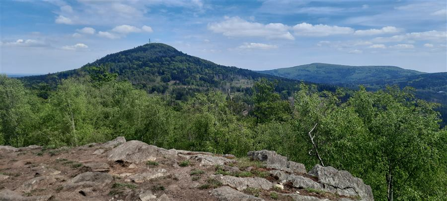
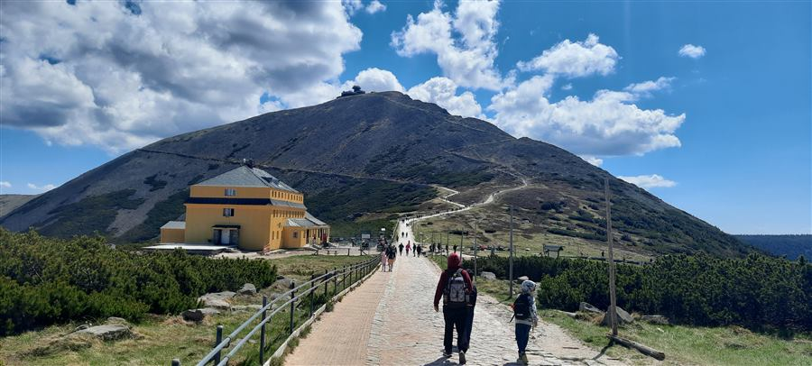
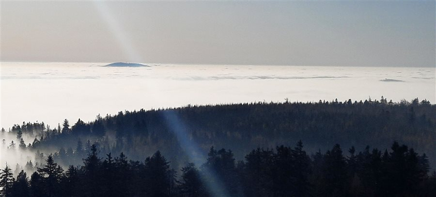
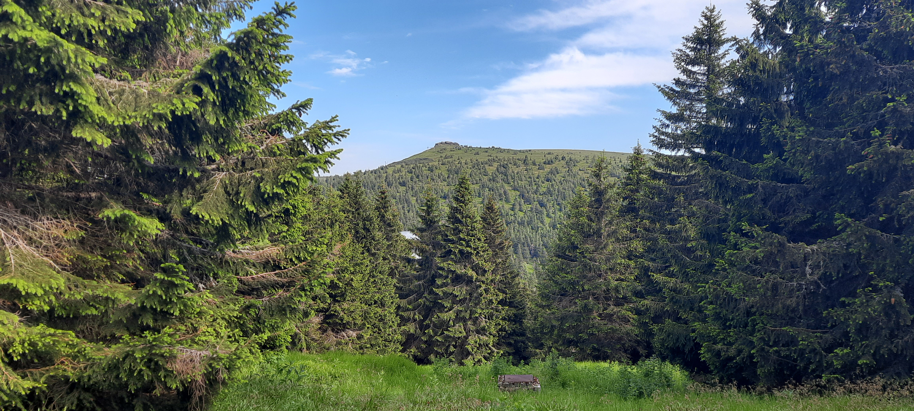
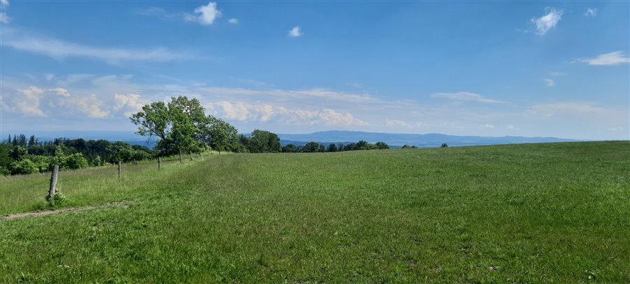
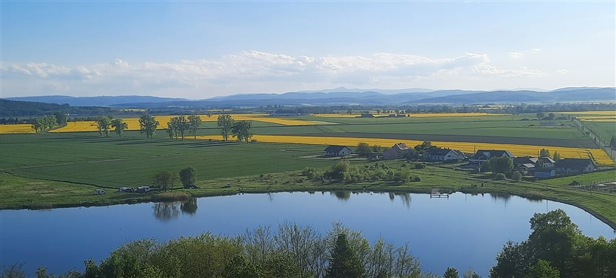

Sudety — łańcuch, grupy, pasma
The Sudetes — chain, groups, ranges
Sudety tworzą łańcuch górski — rozległy, wieloczłonowy system orograficzny rozciągający się na ok. 300 km wzdłuż granicy polsko-czeskiej i czesko-niemieckiej. W opracowaniu wyznaczono nowe granice Sudetów, wg spójnych kryteriów po wszystkich stronach granic.
Dlaczego nowe granice Sudetów są potrzebne? Jaki problem rozwiązują?
Why are new Sudetes boundaries needed? What problem do they solve?
W ramach opracowania wyznaczono jednolite granice całych Sudetów, po stronie polskiej, czeskiej i niemieckiej. Podstawą były czynniki morfologiczne oraz podłoże geologiczne. W granicach Sudetów znalazły się obszary z dominującymi procesami erozji, a poza granicami Sudetów, konsekwentnie w polskiej i czeskiej części, znalazły się wypełnione osadami kilkusetmetrowej grubości rowy tektoniczne Obniżenia Otmuchowskiego i Górnomorawskiego.
Oto kluczowe problemy i niekonsekwencje dotychczasowych opracowań:
- Zróżnicowane kryteria po stronie polskiej, czeskiej i niemieckiej. Podział fizycznogeograficzny Saksonii w Niemczech opiera się na metodzie geografii krajobrazu (geooekologii), opracowanej m.in. przez Sächsische Akademie der Wissenschaften w Lipsku. Metoda ta grupuje mikrojednostki (fizjotopy) w większe jednostki przestrzenne (Geochoren) na podstawie spójności cech przyrodniczych. W Czechach granice wydzielone są na podejściu ściśle geomorfologicznym, a polskie podziały regionalizacji fizycznogeograficznej opierają się na systemie kompleksowym (łączącym rzeźbę, budowę geologiczną, klimat i gleby — rozwiniętym przez Jerzego Kondrackiego). Z powodu zróżnicowanych kryteriów metoda połączenia granic Sudetów wyznaczonych różnymi kryteriami nie jest właściwa.
- Zróżnicowane systemy regionalizacji. W Czechach obszar górski Sudetów wydzielany jest jako Subprovincie (Subprowincja) i nazywany jest Krkonošsko-jesenická subprovincie. W Polsce subprowincją są Sudety z Przedgórzem Sudeckim. W Niemczech odpowiednikiem subprowincji może być Haupteinheitengruppe, choć z uwagi na inne kryteria wydzielenia korelacja nie jest ścisła.
- Brak nazwy Sudety w czeskiej i niemieckiej części masywu. Np. niemieccy i saksońscy badacze obszar położony na południowym wschodzie Saksonii, charakteryzujący się rzeźbą wyżynną i górską, nazywają Masywem Górsko-Pogórskim Łużyc, bez stosowania nazwy Sudety. Stosowane są tu nazwy Góry i Pogórze Łużyckie (Oberlausitzer Bergland, w polskich opracowaniach: Pogórze Łużyckie) oraz Góry Żytawskie (Zittauer Gebirge, przez czeskich i polskich geografów nazywane Górami Łużyckimi).
- Zróżnicowane podejście do zewnętrznych rowów tektonicznych. W Czechach Obniżenie Górnomorawskie (Hornomoravský úval) nie jest uznawane za część Sudetów. W Polsce analogiczne Obniżenie Otmuchowskie, leżące po północnej stronie, większość opracowań włącza w granice Sudetów.
Struktura krajobrazowa Sudetów
Landscape structure of the Sudetes
Opisując Sudety zastosowano naturalny podział na łańcuch górski (całe Sudety, podobnie jak Karpaty), grupę górską (np. Sudety Środkowe — analogicznie do Beskidów w Karpatach) oraz pasmo górskie (np. Góry Kamienne — odpowiednik Beskidu Żywieckiego w Beskidach).
Podział na 8 grup górskich opiera się na wyraźnych granicach geologicznych i morfologicznych: grupy oddzielone są rozległymi obniżeniami (np. Kotlina Kłodzka i Rów Górnej Nysy, Mohelnicka Brazda) lub szerokimi dolinami rzecznymi (dolina Nysy Łużyckiej, Białej Głuchołaskiej). Każda grupa tworzy zwarty masyw oparty o wspólne podłoże geologiczne (terran), historię rozwoju geologicznego i czytelnym, odróżniającym się od innych grup, obliczem krajobrazowym — tak jak zwarte Sudety Wschodnie wokół Masywu Śnieżnika i Wysokiego Jesionika oddziela od Sudetów Środkowych głęboka Kotlina Kłodzka.
Podział Sudetów na 8 grup górskich
Division of the Sudetes into 8 mountain groups
Zaproponowano podział Sudetów na osiem głównych grup górskich, widocznych na mapie po kliknięciu przycisku Grupy górskie. Granice pasm górskich, pogórzy i kotlin ustalono w taki sposób, aby ich granice zawierały się w granicach grupy, co ma swoje uzasadnienie w podłożu geologicznym, wspólnym rozwoju geomorfologicznym i współczesnym krajobrazie. Linie podziału na pasma prowadzono przede wszystkim przez doliny, przełęcze, kotliny lub strefy zmiany rzeźby, ignorowano granice polityczne i administracyjne. Stosowanie powyższych zasad doprowadziło do rozdzielenia pasm łączonych we wcześniejszych opracowaniach na dwa leżące w odrębnych grupach górskich (np. Góry Złotogórskie i Góry Opawskie), połączenia pasm wcześniej rozdzielanych granicą (Góry Kamienne i Jastrzębie) lub wyznaczenia nowych pasm, głównie na pogórzu (Pogórze Opawskie, Pogórze Burgrabickie).









3 Korony Sudetów
3 Crowns of the Sudetes
Korona Sudetów to najbardziej wybitne topograficznie wierzchołki — „koronne" szczyty poszczególnych grup górskich. Wielka Korona rozszerza listę o szczyty wybitne lub silnie izolowane. Diamentowa Korona uzupełnia zestawienie o reprezentantów wszystkich jednostek geomorfologicznych: pasm górskich, pogórzy oraz kotlin i obniżeń, co pozwala zapoznać się wytrawnemu turyście z całym bogactwem i różnorodnością Sudetów oraz wyeksplorować mało poznane ich partie. Projekt Korony Sudetów nawiązuje do idei Korony Gór Polski przenosząc podobną koncepcję zdobywania koronnych szczytów na grunt całego łańcucha Sudetów — po stronie polskiej, czeskiej i niemieckiej. To propozycja skierowana do wszystkich miłośników Sudetów — od początkujących turystów po doświadczonych górołazów, przewodników i pasjonatów zrzeszonych w organizacjach takich jak Studenckie Koło Przewodników Sudeckich (SKPS).
Dlaczego nowe podejście do Korony Sudetów jest potrzebne? Jaki problem rozwiązuje?
Why is a new approach to the Crown of the Sudetes needed? What problem does it solve?
Dotychczasowa koncepcja Korony Gór Sudetów oparta na najwyższych szczytach w mezoregionie fizycznogeograficznym (np. według klasyfikacji Jerzego Kondrackiego czy nowszych modyfikacji) budzi poważne kontrowersje metodologiczne i prowadzi do powstawania błędów i niekonsekwencji.
Oto kluczowe punkty krytyki dotychczasowego rozwiązania:
- Płynność i arbitralność granic fizycznogeograficznych prowadzi do uznaniowości i zmian listy szczytów „koronnych". Podziały fizycznogeograficzne nie są stałe i obiektywne, lecz są hipotezami naukowymi podlegającymi rewizjom (co pokazała np. aktualizacja podziału Polski z 2018 roku opracowana przez PAN i GUGiK). W rezultacie niewielkie przesunięcie linii granicznej może sprawić, że dany szczyt zmieni przynależność geograficzną, a dotychczasowa lista szczytów staje się z dnia na dzień nieaktualna. Szczegółowo problem został opisany przez Pawła Pohla i Mariusza Szatkowskiego w czasopiśmie „Na Szlaku", numery ze stycznia, lutego i marca 2023.
- Wyznaczanie Korony na podstawie granic mezoregionów pomija realne znaczenie szczytów dla krajobrazu Sudetów — ignoruje znaczące szczyty, które znajdują się w mezoregionie z innym, nieco wyższym szczytem (przykłady: Chełmiec, Jawornik Wielki). W konsekwencji samodzielne i rozpoznawalne góry są pomijane w zestawieniu korony.
- Z kolei wyznaczanie Korony Sudetów wyłącznie na podstawie wybitności (np. MSW PTTK) pomija wzniesienia istotne krajobrazowo i krajoznawczo, stanowiące ważny punkt rozpoznawczy Sudetów, lecz z racji położenia w niższych masywach lub częściach pogórskich nieosiągające dużej wybitności (przykłady: Borówkowa, Czorneboh).
Podsumowanie: korona górska powinna bazować na obiektywnych kryteriach, a nie na sztucznych i niepewnych liniach podziału. Kryteria obiektywności i reprezentowania spełnia połączenie wybitności i izolacji.
Co to jest wybitność?
What is prominence?
Wybitność topograficzna (zwana też prominencją lub MDW — Minimalną Deniwelacją Wybitności) to wysokość szczytu mierzona ponad najniższą przełęczą oddzielającą go od najbliższego wyższego wierzchołka. Jest to miara geograficznej samodzielności szczytu — niezależna od wysokości bezwzględnej.
Śnieżka (1603 m n.p.m.) ma wybitność 1203 m, bo najniższa przełęcz kluczowa dzieląca ją od wyższego szczytu leży na ok. 400 m n.p.m. Natomiast Ślęża (718 m) — mimo znacznie niższej wysokości bezwzględnej — ma wybitność 468 m jako całkowicie izolowany masyw.
Co to jest izolacja topograficzna?
What is topographic isolation?
Izolacja topograficzna to odległość w linii prostej od danego szczytu do najbliższego wyższego punktu. Mierzy, jak daleko trzeba się oddalić, zanim napotkamy wierzchołek wyniesiony ponad dany szczyt — bez względu na ukształtowanie terenu pomiędzy nimi.
Ślęża (718 m) ma izolację 36 km — tyle dzieli ją od najbliższego wyższego szczytu. Biskupia Kopa (890 m) leży zaledwie 8 km od Poprzecznej, ale jako najwyższy szczyt Sudetów Kulmowych i jedyny reprezentant Gór Opawskich spełnia kryteria kwalifikacji do Korony Sudetów. Izolacja uzupełnia wybitność: obejmuje szczyty ważne regionalnie, nawet jeśli ich deniwelacja ponad przełęczą jest stosunkowo niewielka.